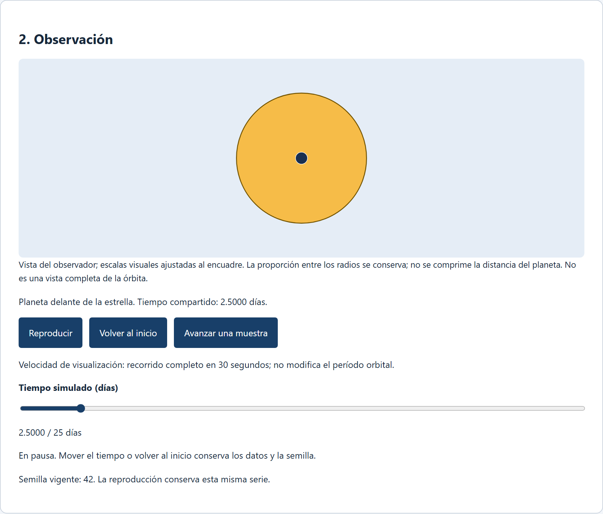
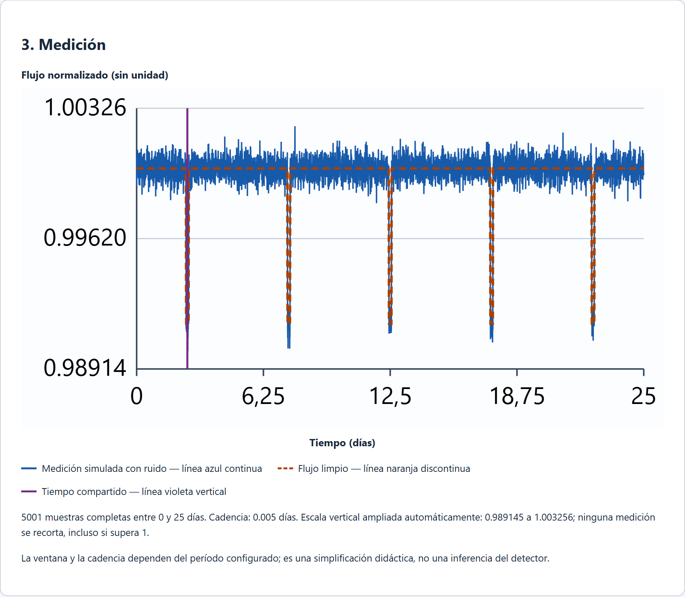
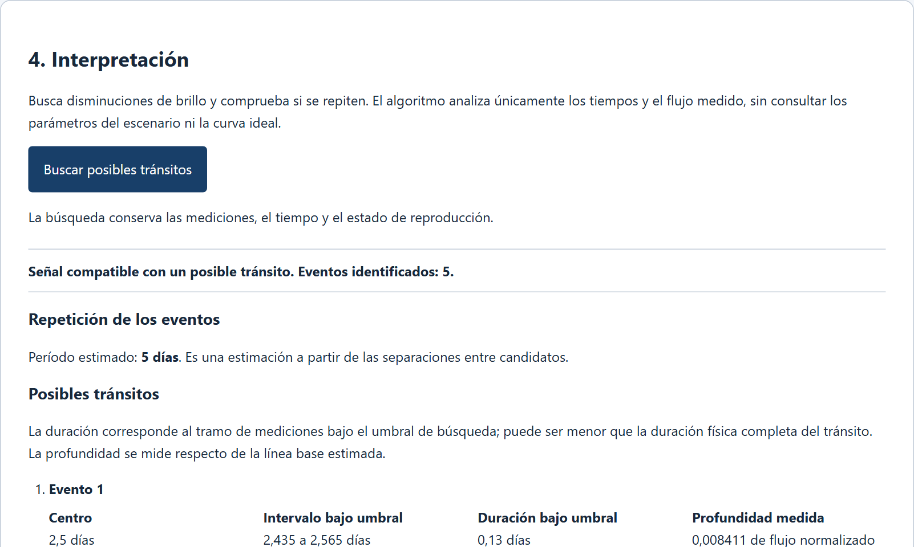

Informe del prototipo, versión 0.1.0-alpha
Bastián Echeverría · Alexander Ferias · Emiliano Toledo
Licenciatura en Ingeniería en Ciencias de la Computación
Curso: Paseo por el Universo
Profesor: Juan Carlos Beamin Muhlenbrock
Pontificia Universidad Católica de Chile
2 de noviembre de 2026
Aplicación: https://tbl4z3r.github.io/AstroDetect/
Repositorio: https://github.com/Tbl4z3r/AstroDetect
La mayoría de los planetas conocidos fuera del Sistema Solar no se han visto directamente. Se infieren a partir de efectos medibles sobre la luz de su estrella. Uno de los métodos más productivos es el de tránsito: cuando un planeta pasa por delante de su estrella, bloquea una fracción pequeña de su luz y el brillo medido disminuye durante unas horas. Misiones como Kepler y TESS han usado esta idea para identificar miles de candidatos (Borucki et al., 2010; Ricker et al., 2015). Sin embargo, entender por qué una curva de brillo con ruido puede sugerir la presencia de un planeta, y por qué no basta para confirmarlo, no es evidente para quien se acerca por primera vez al tema.
AstroDetect es una aplicación web educativa, sin fines de lucro, que permite experimentar con ese razonamiento. El estudiante configura una estrella y un planeta, observa una animación del tránsito sincronizada con la curva de luz simulada y ejecuta un detector básico que busca disminuciones repetidas. La aplicación se ejecuta completamente en el navegador, sin servidor ni cuentas de usuario.
Objetivo general. Construir un prototipo funcional que relacione la geometría de un tránsito con la curva de luz medida y que permita distinguir una señal compatible con un tránsito de una confirmación planetaria.
Objetivos específicos.
Aporte disciplinar. Los tres integrantes estudian Licenciatura en Ingeniería en Ciencias de la Computación. El proyecto aplica herramientas propias de esa formación a un problema astronómico: modelación numérica con atención a la precisión de coma flotante, generadores pseudoaleatorios reproducibles, un algoritmo de detección con estadística robusta, diseño de software modular con contratos de datos, pruebas automáticas con oráculos independientes e integración continua, y una interfaz web accesible. El contenido astronómico proviene del curso Paseo por el Universo y de la bibliografía citada.
Un tránsito ocurre cuando, desde la posición del observador, el disco del planeta se superpone al disco de la estrella. Si se supone una estrella de brillo superficial uniforme y un planeta opaco, la fracción de luz bloqueada es el área de superposición dividida por el área del disco estelar. En el centro de un tránsito central, con el planeta completamente dentro del disco, la profundidad es aproximadamente
δ = (r / R)²
donde r es el radio del planeta y R el de la estrella (Seager & Mallén-Ornelas, 2003). Un planeta de diez radios terrestres frente a una estrella como el Sol produce una disminución de 0,84 %, unas 8.400 partes por millón (ppm). Un planeta como la Tierra produce sólo 84 ppm, lo que explica por qué los planetas pequeños son difíciles de detectar.
La curva no es rectangular. Durante el ingreso y el egreso el planeta cubre parcialmente el borde de la estrella y el flujo cambia de forma continua. Para modelarlo con exactitud se usa el área de intersección de dos círculos de radios R y r separados por una distancia d, con ramas explícitas para discos separados (área cero) y para el planeta contenido en la estrella (área πr²). Modelos más realistas incluyen el oscurecimiento de limbo, por el que el centro de la estrella es más brillante que el borde (Mandel & Agol, 2002); AstroDetect lo omite deliberadamente para que la relación entre geometría y profundidad sea transparente.
El primer tránsito de un exoplaneta observado, el de HD 209458 b, mostró exactamente este tipo de disminución periódica (Charbonneau et al., 2000). Una sola disminución, sin embargo, también puede deberse a manchas estelares, binarias eclipsantes de fondo o efectos instrumentales. Por eso la comunidad distingue entre candidato y planeta confirmado, y exige observaciones independientes antes de confirmar.
El modelo fija la masa de la estrella en una masa solar nominal, la inclinación en 90° y la excentricidad en cero. El semieje mayor se deriva del período mediante la tercera ley de Kepler:
a = [ μ (86400 · P)² / (4π²) ]1/3
con μ = 1,3271244 × 10²⁰ m³/s² y P en días. Las constantes de conversión (radio solar 695.700 km, radio terrestre 6.378,1 km) son los valores nominales de la Unión Astronómica Internacional (Prša et al., 2016). La fase es θ = 2π(t − P/2)/P; la posición proyectada es x = a·sen θ y el planeta está delante de la estrella sólo cuando z = a·cos θ es positivo, lo que evita un falso eclipse cuando pasa por detrás. La duración total del tránsito se contrasta con T₁₄ = (P/π)·arcsen[(R + r)/a].
Cada simulación genera 5.001 muestras entre t = 0 y t = 5P, con cadencia P/1000, de modo que siempre aparecen cinco tránsitos centrados en 0,5P, 1,5P, …, 4,5P. Al flujo limpio se suma ruido gaussiano de desviación σ = ruido(ppm) × 10⁻⁶. Para que la misma semilla reproduzca exactamente los mismos datos en cualquier navegador, el generador es xorshift32 (Marsaglia, 2003) y la transformación a normal estándar es la de Box y Muller (1958), usando dos uniformes por muestra. Los datos observados no se recortan: una medición mayor que 1 es una consecuencia normal del ruido, no un error.
El detector recibe únicamente los tiempos y el flujo observado, nunca el período verdadero, los radios ni la curva limpia. Estima la línea base con la mediana y la dispersión con la desviación absoluta mediana (MAD) escalada por 1,4826, un estimador robusto que no se deja arrastrar por las propias caídas (Leys et al., 2013). Un evento es un tramo de al menos tres muestras consecutivas por debajo de la línea base menos 4σ. Si hay al menos tres eventos con separaciones compatibles, dentro del máximo entre dos cadencias y el 10 % del período, propone un período igual a la mediana de las separaciones. Es un método deliberadamente simple comparado con los usados en investigación, como el ajuste de pulsos cuadrados de Kovács, Zucker y Mazeh (2002), y no entrega probabilidades ni significancia calibrada.
La aplicación usa React, TypeScript en modo estricto, Vite y gráficos SVG nativos. El código se organiza en tres módulos con contratos de datos congelados antes de implementar (versión 1.0.0): simulación (validación, posición, flujo y serie temporal), análisis (detector aislado) e interfaz. El adaptador de la interfaz entrega al detector solamente pares de tiempo y flujo observado; una prueba automática verifica que no pueda leer la curva limpia ni los parámetros del escenario.
La pantalla sigue cinco bloques en el orden del razonamiento: configuración, observación, medición, interpretación y apoyo. Cada cambio válido de parámetros regenera los datos de forma determinista, vuelve al inicio del tiempo y descarta resultados de detección anteriores. Un único reloj de simulación mueve el planeta en la animación y el cursor sobre la curva. La reproducción respeta la preferencia de movimiento reducido del sistema operativo y todos los controles funcionan con teclado.
El trabajo se dividió en tareas acotadas con criterios de aceptación medibles: geometría y flujo (T101), serie temporal y ruido (T102), controles accesibles (T201), animación y curva sincronizadas (T202), detector (T301), casos de integración (T302), integración del laboratorio (T401) y aceptación del MVP (T402). Cada tarea se entregó con pruebas automáticas e integración continua en GitHub Actions. Las tareas T101, T102 y T201 tuvieron además una revisión cruzada y una auditoría antes de integrarse; desde el 26 de octubre el equipo optó por entrega directa sin revisión cruzada para las tareas restantes.
Las figuras siguientes son capturas reales del prototipo compilado desde la versión integrada en la rama principal (commit 724a687), con los valores iniciales: estrella de 1 radio solar, planeta de 10 radios terrestres, período de 5 días, ruido de 500 ppm y semilla 42.



En la vista del observador las escalas visuales se ajustan al encuadre, pero se conserva la razón r/R; el texto lo indica expresamente. La curva tiene ejes rotulados «Tiempo (días)» y «Flujo normalizado» y amplía la escala vertical para que la caída sea visible, informando el intervalo mostrado.
La versión integrada pasa 222 pruebas unitarias e integradas, 4 pruebas de extremo a extremo y 7 recorridos de interfaz en Chromium, además de lint, verificación de tipos y compilación, ejecutados el 26 de octubre de 2026 en Windows 11 con Node 22.12.0. Las pruebas usan oráculos independientes de la implementación: el flujo central coincide con 1 − (r/R)² dentro de 10⁻¹⁰; el área de ocultación parcial coincide con una integración numérica separada; la duración medida coincide con T₁₄ dentro de 10⁻⁶ días; y las 5.001 muestras del generador de ruido se reprodujeron con un programa independiente en Python con un error máximo de 5 × 10⁻¹⁵. Con un planeta de 5 radios terrestres la profundidad es 2.101 ppm y con 10 radios es 8.405 ppm: exactamente el cuádruple, como predice δ = (r/R)².
Para evaluar el detector se ejecutó una grilla de escenarios con estrella de 1 radio solar y período de 5 días, variando el radio del planeta y el ruido, con 20 semillas distintas por combinación (320 simulaciones). Para cada una se registró si el detector declaró un candidato, cuántos de los cinco tránsitos reales encontró y si el período estimado quedó dentro del 1 % de 5 días. La tabla resume los resultados; la columna S/R es la profundidad dividida por el ruido de una sola muestra.
| Radio planeta (R⊕) | Ruido (ppm) | Profundidad (ppm) | S/R por muestra | Candidato (de 20) | 5 tránsitos hallados (de 20) | Período correcto (de 20) |
|---|---|---|---|---|---|---|
| 2 | 100 | 336 | 3,4 | 10 | 0 | 0 |
| 2 | 500 | 336 | 0,7 | 0 | 0 | 0 |
| 5 | 100 | 2.101 | 21,0 | 20 | 20 | 20 |
| 5 | 500 | 2.101 | 4,2 | 20 | 9 | 0 |
| 5 | 1.000 | 2.101 | 2,1 | 0 | 0 | 0 |
| 10 | 500 | 8.405 | 16,8 | 20 | 20 | 20 |
| 10 | 1.000 | 8.405 | 8,4 | 20 | 20 | 20 |
| 10 | 5.000 | 8.405 | 1,7 | 0 | 0 | 0 |
| 20 | 1.000 | 33.620 | 33,6 | 20 | 20 | 20 |
| 20 | 5.000 | 33.620 | 6,7 | 20 | 20 | 11 |
Tabla 1. Selección de 10 de las 16 combinaciones ejecutadas; las seis restantes (radio 2 con 1.000 y 5.000 ppm; radio 5 con 5.000 ppm; radios 10 y 20 con 100 y 500 ppm) siguen el mismo patrón: sin candidatos cuando S/R < 1 y detección completa cuando S/R > 16. Datos completos en agents/evidence/T404/detector-grid.json.
Se observan tres regímenes. Cuando la señal por muestra supera unas ocho veces el ruido, el detector encuentra los cinco tránsitos y estima el período correcto en todas las semillas. Cuando la señal es menor que unas dos veces el ruido, no declara ningún candidato. Entre ambos extremos el comportamiento depende de la semilla: con un planeta de 2 radios terrestres y 100 ppm, la mitad de las simulaciones produce un candidato, pero ninguna encuentra los cinco tránsitos; con 5 radios y 500 ppm siempre hay candidato, pero el período nunca se estima, porque el ruido fragmenta cada tránsito en tramos cortos y las separaciones dejan de ser regulares. En ninguna de las 320 simulaciones apareció un evento lejos de un tránsito real. Las pruebas de la tarea T302 confirman también que con ruido puro, sin planeta, el detector responde «sin evidencia» en las cinco semillas probadas, y que una caída artificial no planetaria se marca como candidata, ilustrando que el detector no distingue la causa física de una disminución.
Generar una serie de 5.001 muestras tomó una mediana de 4,1 ms y analizarla 3,9 ms en un procesador Intel Core i5-12450H, muy por debajo del objetivo de 200 ms. Diez sesiones independientes abiertas en paralelo en una vista previa local terminaron sin errores en 1,3 s en total. Esta prueba fue local y no mide la capacidad del alojamiento público.
El valor educativo del prototipo depende de que sus simplificaciones sean visibles. La inclinación fija de 90° garantiza un tránsito en todos los escenarios, cuando en la realidad la probabilidad geométrica de observarlo es del orden de R/a, apenas un 8 % para los parámetros iniciales. La estrella de brillo uniforme produce caídas de fondo plano, mientras que las estrellas reales muestran fondos curvos por el oscurecimiento de limbo. El ruido es blanco e independiente, cuando los datos reales incluyen variabilidad estelar y ruido correlacionado que generan caídas espurias más convincentes. Y el radio estelar se cambia a masa fija, lo que no corresponde a ninguna secuencia de estrellas reales.
El detector muestra con claridad dos ideas centrales de la inferencia indirecta. Primero, una detección es compatible con un tránsito, no una prueba: la caída artificial de la tarea T302 se detecta igual que un planeta. Segundo, no detectar no demuestra ausencia: en la Tabla 1 hay planetas presentes en todas las simulaciones de la fila de 2 radios terrestres con 500 ppm, y el detector nunca los encuentra. Estas dos afirmaciones aparecen en la interfaz junto a cada resultado.
El umbral fijo de 4σ y el requisito de tres muestras consecutivas son decisiones de diseño, no valores calibrados. Un umbral menor encontraría planetas más pequeños a costa de más falsos positivos; la grilla sugiere que el detector actual es conservador, ya que no produjo eventos espurios. Su principal debilidad es la fragmentación de tránsitos con ruido moderado, que impide estimar el período aunque los eventos estén presentes. Métodos que integran la señal a lo largo de todos los tránsitos, como el ajuste de pulsos cuadrados plegados en fase, son más sensibles precisamente en ese régimen (Kovács et al., 2002).
En lo metodológico, fijar contratos de datos antes de implementar permitió que tres personas trabajaran en paralelo sobre módulos distintos sin interfaces incompatibles, y las pruebas con oráculos independientes detectaron errores de redondeo antes de integrar. La decisión de retirar la revisión cruzada en la segunda mitad aceleró la entrega, pero dejó las últimas tareas verificadas sólo por sus propios autores y por la integración continua.
AstroDetect cumple el objetivo general: el prototipo funciona de principio a fin en el navegador, relaciona la geometría con la curva de luz mediante un modelo verificado y comunica sus resultados con cautela. Los cuatro objetivos específicos tienen evidencia ejecutada: la cuadruplicación de la profundidad, la conservación de la curva ideal al cambiar el ruido con la misma semilla, la estimación correcta del período cuando la señal es suficiente, y los mensajes que separan candidato de confirmación.
La propuesta educativa sigue un ciclo de predecir, experimentar, comparar, analizar y argumentar. Todavía no se ha aplicado con estudiantes, por lo que no se afirma ninguna mejora de aprendizaje; una evaluación simple consistiría en una predicción antes del uso y una justificación después, con preguntas anónimas.
Publicación. El prototipo está publicado gratuitamente en GitHub Pages, en https://tbl4z3r.github.io/AstroDetect/, desde el commit 64a2699 de la rama principal. La publicación se verificó el 27 de octubre de 2026: el sitio responde por HTTPS, carga todos sus recursos desde la subruta del proyecto, funciona en una pantalla de 360 píxeles y tras recargar, y diez sesiones independientes simultáneas completaron una búsqueda de tránsitos sin errores. Esta prueba no mide la capacidad máxima del alojamiento.
Trabajo futuro. Un modo de caso desconocido, en el que el estudiante infiere los parámetros sin ver la curva ideal (tarea T405); oscurecimiento de limbo e inclinación variable; ruido correlacionado; y un detector por plegado en fase que permita comparar métodos.
Borucki, W. J., Koch, D., Basri, G., et al. (2010). Kepler planet-detection mission: Introduction and first results. Science, 327(5968), 977–980.
Box, G. E. P., & Muller, M. E. (1958). A note on the generation of random normal deviates. The Annals of Mathematical Statistics, 29(2), 610–611.
Charbonneau, D., Brown, T. M., Latham, D. W., & Mayor, M. (2000). Detection of planetary transits across a Sun-like star. The Astrophysical Journal, 529(1), L45–L48.
Kovács, G., Zucker, S., & Mazeh, T. (2002). A box-fitting algorithm in the search for periodic transits. Astronomy & Astrophysics, 391, 369–377.
Leys, C., Ley, C., Klein, O., Bernard, P., & Licata, L. (2013). Detecting outliers: Do not use standard deviation around the mean, use absolute deviation around the median. Journal of Experimental Social Psychology, 49(4), 764–766.
Mandel, K., & Agol, E. (2002). Analytic light curves for planetary transit searches. The Astrophysical Journal, 580(2), L171–L175.
Marsaglia, G. (2003). Xorshift RNGs. Journal of Statistical Software, 8(14), 1–6.
NASA. (s. f.). What's a transit? Recuperado el 26 de octubre de 2026 de https://science.nasa.gov/exoplanets/whats-a-transit/
Prša, A., Harmanec, P., Torres, G., et al. (2016). Nominal values for selected solar and planetary quantities: IAU 2015 Resolution B3. The Astronomical Journal, 152(2), 41.
Ricker, G. R., Winn, J. N., Vanderspek, R., et al. (2015). Transiting Exoplanet Survey Satellite. Journal of Astronomical Telescopes, Instruments, and Systems, 1(1), 014003.
Seager, S., & Mallén-Ornelas, G. (2003). A unique solution of planet and star parameters from an extrasolar planet transit light curve. The Astrophysical Journal, 585(2), 1038–1055.
Tbl4z3r/AstroDetect. (2026). AstroDetect [Código fuente, commit 724a687]. GitHub. https://github.com/Tbl4z3r/AstroDetect